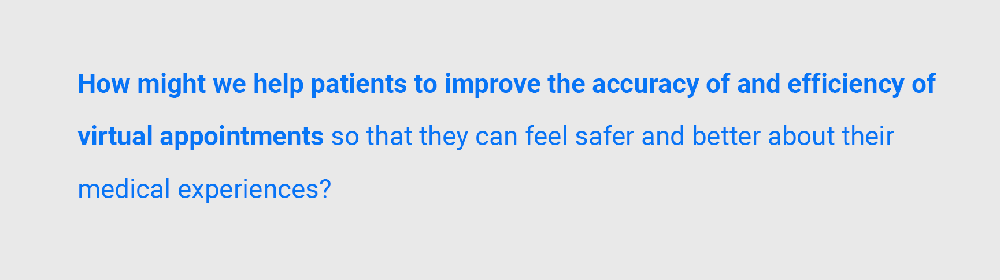
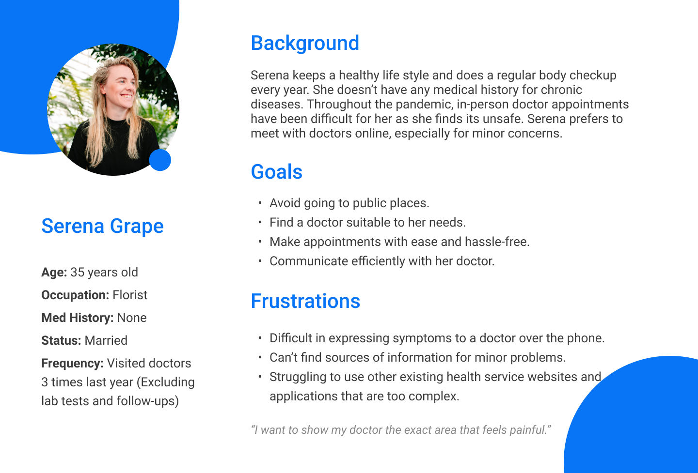

Project Overview
Dr. Hippo is a case study of mine that I made to utilize design thinking as my main design processor.
My goal was to include 5 main steps within my project:
- Empathize
- Define
- Ideate
- Prototype
- Test
By using these 5 actions, I was able to address the end users’ problems with more intuition.
Empathize
During the start of the pandemic I developed a minor rash that I hadn’t noticed before. It grew worse as time passed and I knew I had to get in touch with a doctor, but I was reluctant to go to a clinic as I felt it was unsafe at the time. So I opted to book an appointment for a phone call with the doctor.
The whole process went like this:
- Call the clinic for an appointment.
- Wait for a call from the doctor on the arranged date and time.
- Describe the symptoms to the doctor and wait for a diagnosis.
- Referred to another doctor that specializes in the kind of problem I have.
- More waiting.
- Clinic calls to arrange an in-person check with the doctor.
- Meet with doctor and am prescribed medication for my problem.
Throughout all the waiting and worry, I thought to myself:
What could be improved in the system to efficiently help both the patient and doctor?
Before I conducted qualitative interviews to local potential users, I found a few key discoveries from secondary research:
- Half of all Canadians have now accessed a physician using virtual care options and are highly satisfied with the results
- 46% of Canadians who had the opportunity to use virtual care since the pandemic outbreak would prefer a virtual method as a first point of contact with their doctor
*source: CMA Health Summit-VIRTUAL CARE IN CANADA:Discussion paper
The findings showed that almost half of Canadians preferred to use virtual doctors both during and probably after the pandemic. As the population started paying more attention to the severity of Covid-19, phone call appointments became the main way of contact between a doctor and a patient.
But there are those that still hesitated to make virtual appointments due to reasons such as technological inconveniences, lack of inclusivity, and issues in communication.
Even though patients were concerned with the risks or restrictions of going to a clinic in-person, many still preferred to see a doctor in-person. In this section, I want to explore the potential reasons behind it.
Based on my secondary research, personal experience, and thoughts from friends, I came up with the following assumptions:
- A doctor’s diagnosis is heavily limited when solely relying on what the patient tells them.
- Patients may have various healthcare providers unknown to the doctor (ex. Telemedicine (add link) applications) therefore doctor’s don’t have access to previous health or medication records.
- Technology itself being a barrier and having to jump through various hoops before finally getting an appointment can be a turnoff to using online health services.
So I began to think on how Dr. Hippo could improve these issues:
- How might we improve the communication between doctors and patients?
- How might weprovide more accurate and suitable suggestions for users to find medical services?
- How might weprovide an all-in-one stop for information?
User Research
To test my assumptions, I collected insights from 6 users through 1-hour qualitative interviews. The demography of all interviewees is as followed:
- Ages between 25 – 45
- Visits any healthcare service (ex. Clinic, Therapist, Psychologist) at least twice a year.
- Is concerned with the risks of in-person appointments
- Understands basic operations of using mobile apps
- Has tried at least one telemedicine service

The main focus during testing was to evaluate how people view phone call and online medical appointments, and what their concerns are and what they hope to experience.
Here is part of the questions list:
I collected the insights from the interviewees and grouped them into the following topics:
The aforementioned interviews showed that people were mainly concerned with current methods of talking to doctors online or by phone and whether virtual calling is accurate enough.
The main pain points are:
- Lack of information
- Fear of unclear communication
- Time wastage
As a result of my findings, I redefined the scope of my project to focus on:
Persona
Based on the insights, quotes from interviews and secondary research, I developed my persona Serena to identify the questions
Storyboard
To have a better understanding what scenario Serena will experience and how her emotion changes if she use a virtual appointment application to conduct a doctor appointment, I create a storyboard as following. In this process, I can pinpoint the most crucial section that I can improve:
User Flow

Wireframe
Logo
The app use the short form of “Hippocrates”, who is considered one of the most outstanding figures in the history of medicine. And the short form “hippo” represents the animal hippo so the logo for Dr. Hippo is in the shape of a cartoon-type hippo.

Onboarding

Home & Search

Appointment
After booking the appointments, users can add dates and time to google canlendar or outlook calendar (also can opt out) and if users don’t want to add anything, the apoointment detailed information is also found here.

Users can check their checkup or test results at anywhere they want. The reports include x-rays, blood test, and all kinds of hysical checkups. Both doctors and patients can go through it.
Profile
Users record their appointment history and edit preference in profile. Only signed-in users are able to access most functions.
Future Improvement
- Web Version
- Online Payment
- Customized health plan
- Purchase Insurance
- Communities